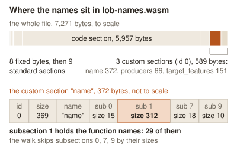

12 · Stack and names
Your debugger now says things like "function 6, instruction 412", and a person debugging Lob wants to read "update_hud, called from game_tick". By the end of this lesson your debugger reads function names from the binary's name section, shows the call stack at any tick, stops where a named function begins, runs to the end of the current function, and gives the source line of any instruction.
Start
Run these commands from this course's directory, in the project you used for lessons 08 to 11. Before this lesson debug.mjs names every function by its index, stack and finish stop with "not written yet", and break update_hud says there are no names, because project/names.mjs is a stub and your debugger.mjs has lesson 10's stubs of stack and stepOut. After it, every instruction debug.mjs prints carries its function's name and its source line, stack lists the functions in progress, break update_hud stops where a call to it begins, and finish runs to the end of the current function.
Your machine, recorder and debugger must pass their checks first: node lab.mjs check project 08, node lab.mjs check project 09 and node lab.mjs check project 10. Lesson 11's index isn't used here. If one of them fails and you want to go on with this lesson, make a new project with node examples/start-chapter.mjs project12 supplied, then node examples/start-recorder.mjs project12 supplied and node examples/start-debugger.mjs project12 supplied, record its run with node lab.mjs record project12 --world 42 --out project12/run42.json, and use project12 wherever this lesson says project.
Code scope: this lesson changes two files.
project/names.mjs, a new file: walk through four marked regions, 73 lines including blank lines:leb128,sections,subsectionsandline-at. The rest of the file is supplied, 25 lines: the comments at the top and the start of a smallReaderclass, its constructor andbyte(). The finished file, the end-of-unit checkpoint, isexamples/names-checkpoint.mjs, 106 lines.project/debugger.mjs, your file from lesson 10: four changes, 24 lines new or changed. Two of them fill the stubs lesson 10 left at the end of the class,stackandstepOut, each already between its own region markers, and two change regions you already have,stopsandsearch-back. Those two listings show the whole region again, with the changed lines marked, so you can see each change in place. The finished file isexamples/stack-checkpoint.mjs, 357 lines: lesson 10's checkpoint with these four changes.
Nothing else is supplied for this lesson. Two supplied parts are toured: lesson 10's nextInstruction, which function stops reuse, and the describe function in debug.mjs, which puts the names and lines beside every instruction it prints.
Time: allow about 30 to 40 minutes to read and 1 to 3 hours to implement, diagnose and try the new application. These are planning estimates, not measured learner times.
Choose a route. Each command below writes project/names.mjs only if the project has none yet, or if it is still the untouched stub that node lab.mjs start made. If you have edited that file, the command refuses and changes nothing.
- Type in the important parts:
node examples/start-names.mjs project write. This copiesstarter/names-build.mjs, which has the supplied parts and four unfinished regions. It doesn't touchdebugger.mjs. Type or paste each located listing below, intonames.mjsand into your owndebugger.mjs. - Start with working code:
node examples/start-names.mjs project supplied. This copiesexamples/names-checkpoint.mjs. It also replacesdebugger.mjswithexamples/stack-checkpoint.mjs, but only if yourdebugger.mjsis still exactly lesson 10's supplied checkpoint, byte for byte, so that it holds none of your own work. Otherwise it leavesdebugger.mjsas it is and says so, and you make the four changes yourself. Follow each explanation and run each command instead of transcribing, then do the failure and repair and the new application. This is supplied implementation, not your own work. - Use AI for the changes: start with the type-in route (
write). Give the assistantAPI.md, this lesson and your files, one region at a time. Ask it to explain what each region reads or changes and why; run and inspect what it writes. Record the actual assistance you used.
Both routes also create project/next-line.mjs, the unfinished new application, if it doesn't exist yet. Prefer to write it all from API.md with no listings? Don't run either command, fill the stub node lab.mjs start gave you, write stack, stepOut and function stops into your debugger.mjs, and copy starter/next-line.mjs to project/next-line.mjs when you reach the new application.
Run the first check with the description matching where you started:
# Type-in route (write), including AI users before requesting changes:
node lab.mjs check project 12 --help-used "chapter write starter; four regions unfinished"
# Supplied route:
node lab.mjs check project 12 --help-used "supplied names and stack checkpoints; initial baseline"The route command records write or supplied in PROJECT.json, and every check receipt keeps it as unit12_start_route. That says where you began, not who wrote your current code; keep using --help-used to say what helped each attempt. On the type-in route four of the five checks fail with not written yet, and 12.function-stops fails with a real answer, which the section on function stops explains. The supplied route passes them all when it replaced debugger.mjs; if it kept your own, add lesson 12's changes to it first. Either result is a baseline, not evidence of understanding.
Keep the // region: NAME and // endregion: NAME markers. A listing replaces everything between its matching pair, including the line there that throws "not written yet". The listings omit the marker lines. To recover later without losing edits, run the supplied setup commands above from the course folder with project-recovery in place of project12, then run node examples/start-names.mjs project-recovery supplied and compare its names.mjs and debugger.mjs with yours. Don't copy a checkpoint over your attempt.
Where names live
targets/lob.wasm was linked with its names stripped, left out of the file, because Sightline asks its learners to work out what each unnamed function does. For this lesson the course built the same C file again, with the same compiler, and kept its names, in targets/lob-names.wasm. Its code is byte for byte the code of lob.wasm, so programs/lob.json describes it too. The extra bytes are custom sections at the end of the file.

A WebAssembly file is 8 fixed bytes followed by sections, each an id byte, its size in bytes, then that many bytes. Custom sections have id 0, and their contents start with a name: a length, then that many bytes of text (UTF-8, which for these names is plain ASCII). The one named name holds the names.
Sizes and lengths are LEB128 numbers, in which each byte carries 7 bits of the number, lowest first, and its top bit says whether another byte follows. 1D is 29. B8 02 is two bytes. B8 has its top bit set and carries 56, and 02 carries 2, worth 2 × 128. Together, 312. (Sightline teaches LEB128 and the rest of the file format in depth.)
Inside the name section are subsections, each an id byte, a size and contents. Subsection 1 holds function names: a count, then for each function its index and its name. Skip any other subsection by its size. Here are the first bytes of the name section in lob-names.wasm, after its own name:
00 0F subsection 0, 15 bytes: the module's own name
0E 6C 6F 62 2D ... a name of 14 bytes: lob-names.wasm
01 B8 02 subsection 1, 312 bytes: function names
1D 29 names follow
00 function 0
0C 73 65 72 76 65 72 5F 72 6F 75 6E 64
a name of 12 bytes: server_round
01 06 6A 73 5F 63 6F 73The 29 names are Lob's 4 imports and its 25 functions.
Question 12a: decode the last line. What name does the name section give function 1? Commit:
node lab.mjs predict project 12a YOUR_ANSWERfunctionNames(bytes) in names.mjs walks the sections from byte 8, skips every section that isn't the custom section name, and returns { index: name } for every entry of subsection 1, or {} when the file has no name section. Check 12.names reads both named and stripped files, and a small file of its own that puts other subsections before subsection 1. It and the other checks this lesson names make up unit 12's checks, which one command runs:
node lab.mjs check project 12 --help-used "describe what helped"Read numbers and names
The supplied Reader at the top of names.mjs keeps a position in the file, pos, and byte() returns the byte there and moves past it, refusing to read past the end. In project/names.mjs, replace the leb128 region, which adds the two reads everything else is made of:
Replace the leb128 region.
// Unsigned LEB128: 7 bits per byte, lowest first. A byte with its top bit
// set says another byte follows.
u32() {
let value = 0;
let shift = 0;
let b;
do {
b = this.byte();
value += (b & 0x7f) * 2 ** shift;
shift += 7;
} while (b & 0x80);
return value;
}
// A length, then that many bytes of UTF-8 text.
name() {
const length = this.u32();
const end = this.pos + length;
if (end > this.bytes.length)
throw Error('functionNames: a name runs past the end of the file');
const text = new globalThis.TextDecoder().decode(
this.bytes.subarray(this.pos, end),
);
this.pos = end;
return text;
}u32 adds each byte's low 7 bits at the place shift gives them, 0, then 7, then 14, and goes on while the byte's top bit, 0x80, is set. For the B8 02 decoded earlier, u32 adds B8 & 0x7f, 56, at shift 0, then 2 at shift 7, 256, and stops because 02's top bit is clear: 312. Multiplying by 2 ** shift keeps the arithmetic in ordinary numbers. JavaScript's << works on 32-bit signed integers, so in a fifth byte, at shift 28, it could turn a large number negative. name() reads a length with u32 and decodes that many bytes as text, so every name in the file costs one call.
Walk the sections
Replace the sections region:
Replace the sections region.
// { [index]: name } for every function the "name" section names; {} without one.
export function functionNames(bytes) {
const magic = [0x00, 0x61, 0x73, 0x6d];
if (!magic.every((b, i) => bytes[i] === b))
throw Error('functionNames: not a WebAssembly file');
const r = new Reader(bytes, 8);
while (r.pos < bytes.length) {
const id = r.byte();
const size = r.u32();
const end = r.pos + size;
if (id === 0 && r.name() === 'name') return functionSubsection(r, end);
r.pos = end;
}
return {};
}After the 8 fixed bytes, each section starts with its id and size, so end is where the next section begins. A section that isn't custom, or a custom section with another name, is skipped by setting pos to end without reading its contents. Only custom sections have a name to read, which is why the test reads it only when id === 0. A file without a name section runs out of sections and gets {}.
Read subsection 1
Replace the subsections region:
Replace the subsections region.
// Inside the name section: subsections, each an id byte, a size and contents.
// Subsection 1 is a count, then each function's index and name; skip the rest.
function functionSubsection(r, end) {
const names = {};
while (r.pos < end) {
const id = r.byte();
const size = r.u32();
const next = r.pos + size;
if (id === 1) {
for (let n = r.u32(); n > 0; n--) {
const index = r.u32();
names[index] = r.name();
}
}
r.pos = next;
}
return names;
}Each subsection is found the way sections were, by its id and size, and next is where the following one begins. Subsection 1 is read entry by entry: an index, then a name. Every other subsection, the module's name in subsection 0 among them, is skipped by jumping to next. Setting pos to next after subsection 1 too means the next subsection is read from where it really starts, even if subsection 1 held more than its entries. The order of subsections doesn't matter, which is what the check's small file tests.
Read Lob's names with your functionNames:
node examples/show-names.mjs projecttargets/lob-names.wasm: 7271 bytes, 29 names
0 server_round 1 js_cos 2 js_sin 3 server_wind
4 game_init 5 new_round 6 update_hud 7 game_key
8 game_tick 9 r_angle 10 r_power 11 r_cannon_x
12 r_target_x 13 r_flying 14 r_px 15 r_py
16 r_impact_x 17 r_impact_age 18 r_result 19 r_wind_level
20 r_cloud 21 r_trail_ptr 22 r_trail_n 23 r_trail_head
24 r_line_ptr 25 r_msg_ptr 26 r_help_ptr 27 r_mode
28 r_state
targets/lob.wasm: 6682 bytes, no name section, so {}The named build is 589 bytes longer than the stripped one: the name section and the two other custom sections in the figure. The stripped build has no section called name, so the walk reaches the end of the file and returns {}. Most of these names were already in the listing. The game exports game_init, game_key, game_tick and every getter under these names, and it imports server_round and server_wind under theirs. Only the name section holds the names of the two functions the game doesn't export, new_round and update_hud, and the C names of the two imports the game asks for as cos and sin. In debug.mjs, break update_hud now finds function 6 by its name.
The call stack
Your machine already keeps the call stack in state.frames, outermost first, each with the function it's running and the at of its next instruction. stack() returns [{ func, at }] for those frames at the debugger's current position, or [] between calls. A call to an import pushes no frame, because the import runs outside the machine and returns at once.
In debug.mjs, stack prints the frames with names, and where names the instruction that runs next.
Question 12b: you stop where update_hud, function 6, begins during a call to game_tick. How many entries does stack() return? Commit:
node lab.mjs predict project 12b YOUR_ANSWERA stop where update_hud begins comes after game_tick's call instruction has pushed update_hud's frame, so that frame counts. A call that comes from outside the game, from the recording rather than from another function, works differently. It begins between calls, so at a stop where it begins, its instruction 0 runs next but no function is running yet, and stack() is [].
List the frames
In project/debugger.mjs, find the stack region near the end of the class. It holds the stub of stack(), which throws "stack: not written yet (lesson 12)". Replace everything between // region: stack and // endregion: stack with the listing below. If your file has no such markers, because you wrote it without lesson 10's starter, replace your stack() stub with the listing and add the two marker lines around it:
Replace the stack region, which holds the stack() stub.
stack() {
return this.machine.state.frames.map((f) => ({ func: f.func, at: f.at }));
}The frames are copied into new objects, so a caller that changes what stack() returned can't change the machine. Each frame's at is the instruction that frame runs next: the innermost frame's is the instruction that runs next in the whole run, and a caller's is the instruction after its call, where it carries on when the call returns. Between calls the machine has no frames, so the list is empty, which is what API.md asks.
Check 12.stack compares your stacks with a fresh machine at many positions.
Stopping at a function
A function stop fires at a position where a call to that function begins, meaning the next instruction is the function's instruction 0. Add functions: [index] to the stops continue and continueBack understand, with reason: 'function'. In debug.mjs, break update_hud adds a function stop by name, and break 6:120 a breakpoint at one instruction.
Two places in lesson 10's debugger.mjs need the change. stopHere, in the stops region, tests the stops at each position, so it needs the function test. And continueBack, in the search-back region, decides which stretches it may skip with const watchesOnly = !stops.breakpoints?.length;. A function stop, like a breakpoint, can fire in a stretch that writes nothing, so that line must count function stops too. Left as it is, a continueBack given only functions counts as "watches only" with no watched pages, skips every stretch and reports 'start'.
Your first node lab.mjs check project 12 doesn't say "not written yet" for 12.function-stops. Lesson 10's continue and continueBack already exist and run; they ignore a functions list they don't know, so the check gets a real answer from them, such as { reason: "end" } from continue, and prints it beside the stop it expected.
Test for a function stop
Tour the supplied nextInstruction again, just above where in your debugger.mjs. During a call it answers the innermost frame's next instruction, and between calls the first instruction of the next call, { func: this.callFunc[calls], at: 0 }. So the instruction a call begins with is visible at the position before it runs, whether the call comes from another function or from the recording.
Replace the stops region. Only the marked lines differ from lesson 10's:
Replace the stops region; the marked lines are new.
stopHere({ breakpoints = [], watches = [], functions = [] }, event) {
if (event && event.writes.some((w) => changesWatched(w, watches)))
return 'watchpoint';
const next = this.nextInstruction();
if (
next &&
breakpoints.some((b) => b.func === next.func && b.at === next.at)
)
return 'breakpoint';
// A function's instruction 0 runs next only where a call to it begins.
if (next && next.at === 0 && functions.includes(next.func))
return 'function';
return null;
}
continue(stops = {}) {
while (this.tick < this.end) {
const event = this.forward();
const reason = this.stopHere(stops, event);
if (reason) return { reason, tick: this.tick };
}
return { reason: 'end', tick: this.tick };
}stopHere now takes functions, defaulting to none, so every caller from lesson 10 still works. The function test looks forward, like the breakpoint test, at the instruction that runs next. Both halves of its condition matter: the function must be one of the stopped ones, and its instruction 0 must be next. Instruction 0 of a function runs next only where a call to it begins. A branch inside a function goes either forward to the end of a block or back to the first instruction inside a loop, after the loop instruction itself, and neither is instruction 0. continue is unchanged: it already asks stopHere after every instruction.
Then replace the search-back region. Only the marked line differs from lesson 10's:
Replace the search-back region; the marked line is changed.
continueBack(stops = {}) {
const here = this.tick;
if (here === 0) return { reason: 'start', tick: 0 };
const pages = (stops.watches ?? []).flatMap((w) =>
pagesOf(w.address, w.size ?? 1, this.pageSize),
);
const watchesOnly = !stops.breakpoints?.length && !stops.functions?.length;
const found = this.searchBack(
here - 1,
(event) => {
const reason = this.stopHere(stops, event);
return reason ? { reason, tick: this.tick } : null;
},
(i) => !watchesOnly || this.mayHaveWritten(i, pages),
);
if (found) {
this.moveTo(found.tick);
return found;
}
this.moveTo(0);
return { reason: this.stopHere(stops, null) ?? 'start', tick: 0 };
}
searchBack(last, test, mayMatch = () => true) {
for (let i = Math.ceil(last / this.every) - 1; i >= 0; i--) {
if (!mayMatch(i)) continue;
const snapshot = this.snapshots[i];
const stop = Math.min(last, snapshot.tick + this.every);
this.restore(snapshot);
let found = null;
while (this.tick < stop) {
const finding = test(this.forward());
if (finding) found = finding;
}
if (found) return found;
}
return null;
}
mayHaveWritten(i, pages) {
const a = this.snapshots[i];
const b = this.snapshots[i + 1];
return !b || pages.some((p) => a.pages[p] !== b.pages[p]);
}watchesOnly decides whether continueBack may skip a stretch whose watched pages stayed shared. With a function stop present it is now false, so every stretch going back is replayed until one holds a stop, as with a breakpoint. The cost is about the distance to the stop plus up to two stretches, lesson 10's cost for a breakpoint.
Run to the end of the function
stepOut() runs forward until the function running now has returned to its caller, that is, until the call stack is shorter than it is now. In debug.mjs it's finish. Between calls there is no function running. Define what stepOut() does there and say so in a comment.
Find the step-out region, which holds the stub of stepOut() that throws "stepOut: not written yet (lesson 12)". Replace everything between // region: step-out and // endregion: step-out with the listing below, or, in a file without those markers, replace your stepOut() stub and add the two marker lines around it:
Replace the step-out region, which holds the stepOut() stub.
// Forward to the first position with fewer frames than now. Between calls no
// function is running, so stepOut runs the whole next call and stops where it
// has returned, at the next position between calls. At the end it stays.
stepOut() {
const depth = this.machine.state.frames.length;
if (depth === 0) {
if (this.tick < this.end) {
do {
this.forward();
} while (this.machine.running);
}
} else {
while (this.machine.state.frames.length >= depth) this.forward();
}
return this.tick;
}Inside a call, stepOut counts the frames now and runs instructions until there are fewer. A call made on the way pushes a frame and pops that frame again, which doesn't stop stepOut; the stop comes when the starting function's own return or final end pops its frame. The first position with fewer frames is where the caller carries on, or, for the outermost function of a call, the position between calls after it. Between calls, this checkpoint runs the whole next call, the one where() names, and stops where it has returned. Another choice would do, such as refusing or not moving, as long as the comment says which. forward() is lesson 10's: between calls it begins the next call first. Moving forward replays only the distance moved, so stepOut costs the instructions it runs.
Checks 12.function-stops and 12.step-out compare your stops with a scan of every instruction. 12.function-stops seeks to positions spread over a recording and from each asks both continue and continueBack for a function stop. 12.step-out seeks to positions inside calls and calls stepOut, which counts frames and passes no stops to the debugger. 12.stack seeks and compares stack() with a fresh machine, and 12.names and 12.lines call only names.mjs.
All four changes to debugger.mjs are in. examples/stack-session.txt is a script of debug.mjs commands that goes to the first game frame of lesson 09's recording, stops where update_hud begins, prints the stack, runs to the end of update_hud with finish, and then continues backward to the stop again:
node debug.mjs project project/run42.json examples/stack-session.txtproject/run42.json: 759 calls, 652927 instructions. Type help for commands.
> call 13
tick 84111, call 13 (game_tick), next: function 8 (game_tick), instruction 0: global.get 0
> break update_hud
stops: {"breakpoints":[],"watches":[],"functions":[6]}
> continue
function at tick 84157, call 13 (game_tick), next: function 6 (update_hud), instruction 0: global.get 0
> stack
0: function 8 (game_tick), instruction 570: local.get 0
1: function 6 (update_hud), instruction 0: global.get 0
> finish
tick 84827, call 13 (game_tick), next: function 8 (game_tick), instruction 570: local.get 0
> stack
0: function 8 (game_tick), instruction 570: local.get 0
> cost
659299 instructions run by your machine so far, 652927 of them while your Debugger opened the recording
> rcontinue
function at tick 84157, call 13 (game_tick), next: function 6 (update_hud), instruction 0: global.get 0
> cost
660282 instructions run by your machine so far, 652927 of them while your Debugger opened the recording![The call stack from the snapshot at 84,000 through call 13, as the number of frames at each position. The snapshot falls inside call 12, which holds two frames and has returned by 84,111, where call 13 begins. game_tick's frame is alone until update_hud begins at 84,157, where the function stop fires; two frames until finish stops at 84,827 with one frame again. Below, rcontinue from 84,827 restores the snapshot, replays 826 instructions noting each stop, then restores again and replays 157 to the stop: 983 in all.](figures/call-frames.svg)
The function stop fires with update_hud's instruction 0 next, and the stack shows game_tick waiting at its instruction 570, the one after its call. finish stops at the first position with fewer frames, where game_tick carries on at instruction 570, 670 instructions after the stop. The two cost lines differ by 983, the two replays under the figure: 826 instructions to replay the stretch from the snapshot at 84,000 to the position before the one rcontinue started from, and 157 to move back to the stop. The first cost also counts the replay your Debugger made when it opened the recording, and the seeks call 13 made.
Lines
The compiler can also write a line table, which gives, for each stretch of code, the line of the C source it came from. It lives in .debug_line, one of the sections of DWARF, the standard format for debugging information, which only a build with debugging information carries. No file this course ships carries DWARF, because DWARF also records the layout of every C struct, which is what Sightline asks its learners to work out. The course decoded the line table of a debugging build when it built the targets and saved its rows in lines/lob.json: { offset, line, column }, sorted by offset. DWARF counts a WebAssembly address from the start of the code section's contents, after its id byte and size. The code section holds the functions' instructions, and the listing records where its contents start as codeSectionStart. The course added that start, so offset is a file offset like the listing's offsets, where offsets[k] is the file offset of instruction k.
An instruction belongs to the last row at or before its offset. lineAt(lines, offset) finds that row with a binary search and returns { line, column }, or null before the first row.
Here are five rows of lines/lob.json, around the end of the loop of lesson 08 that clears memory in game_init:
offset line column
555 259 52
561 0 52
565 259 26
566 259 3
571 260 5Some rows say line 0. That is DWARF's way of saying the compiler made this code without a line of its own, and 561 of Lob's 2,806 instructions fall on such rows, among them instructions of loop bodies the compiler unrolled, writing the body out several times in a row. In lesson 08's clearing loop, the local.get and i32.const that begin each copy after the first fall on line 0. debug.mjs prints "no line" for any instruction on a line-0 row. DWARF also marks the end of each function's rows with an end-of-sequence row. The course kept those as rows of line 0 at the end of each function's code, so the last line of one function never covers the start of the next.
The C source isn't given, so a line number is a label rather than a place you can read. It still groups instructions into statements. An assignment compiled to eight instructions gives all eight one line, and comparing lines is how a debugger steps by line.
Question 12c: instruction 47 of game_init, the br_if 0 that closes that loop, is at file offset 568. What line does lineAt give it? Commit:
node lab.mjs predict project 12c YOUR_ANSWERFind the row
Replace the line-at region of project/names.mjs:
Replace the line-at region.
// { line, column } of the last row at or before `offset`, or null when every
// row comes after it. Rows are sorted by offset.
export function lineAt(lines, offset) {
let lo = 0;
let hi = lines.length;
// Rows before lo are at or before offset; rows from hi on come after it.
while (lo < hi) {
const mid = (lo + hi) >> 1;
if (lines[mid].offset <= offset) lo = mid + 1;
else hi = mid;
}
if (lo === 0) return null;
return { line: lines[lo - 1].line, column: lines[lo - 1].column };
}The search keeps one rule true as lo and hi close in: every row before lo is at or before offset, and every row from hi on comes after it. When they meet, lo is the first row past offset, so the row just before it is the answer. When lo is still 0, every row comes after the offset and there is no line. Lob's table has 1,050 rows, so a question takes at most 11 comparisons. A row of line 0 is returned like any other; deciding what it means is left to the caller, as debug.mjs does.
Check 12.lines asks lineAt about every instruction of Lob and compares with the rows.
debug.mjs calls your lineAt from its supplied describe function, which every command uses to print an instruction. Tour it near the top of debug.mjs. It looks up the instruction's file offset in the listing, f.offsets[at], and passes it to lineOf, which calls your lineAt to find the row. Then it adds [line N] after the instruction, or [no line] for a row of line 0, beside the name your functionNames gave. Run the same script again:
node debug.mjs project project/run42.json examples/stack-session.txtproject/run42.json: 759 calls, 652927 instructions. Type help for commands.
> call 13
tick 84111, call 13 (game_tick), next: function 8 (game_tick), instruction 0: global.get 0 [line 306]
> break update_hud
stops: {"breakpoints":[],"watches":[],"functions":[6]}
> continue
function at tick 84157, call 13 (game_tick), next: function 6 (update_hud), instruction 0: global.get 0 [line 136]
> stack
0: function 8 (game_tick), instruction 570: local.get 0 [line 335]
1: function 6 (update_hud), instruction 0: global.get 0 [line 136]
> finish
tick 84827, call 13 (game_tick), next: function 8 (game_tick), instruction 570: local.get 0 [line 335]
> stack
0: function 8 (game_tick), instruction 570: local.get 0 [line 335]
> cost
659299 instructions run by your machine so far, 652927 of them while your Debugger opened the recording
> rcontinue
function at tick 84157, call 13 (game_tick), next: function 6 (update_hud), instruction 0: global.get 0 [line 136]
> cost
660282 instructions run by your machine so far, 652927 of them while your Debugger opened the recordingEvery instruction now carries its line. game_tick's instruction 570, where it carries on after update_hud returns, is on line 335, a statement after the one that called update_hud. The run, the stops and the costs are the same as before: reading lines runs nothing.
Every region of both files is filled. Run the unit's checks, describing what you did:
# After filling the type-in route's starter and your debugger from the listings:
node lab.mjs check project 12 --help-used "filled four names regions and four debugger changes from chapter listings"
# After following the supplied route:
node lab.mjs check project 12 --help-used "supplied names and stack checkpoints; followed the explanations and tours"All 5 checks should pass. If one fails, its first mismatch names the section to reread. Keep the failing attempt and your explanation before you edit.
Read a stack
Open lesson 09's recording in debug.mjs, break new_round, and at each stop print the stack with stack. continue takes you to the next round. At one stop, finish and print the stack again. As in lesson 10, you can type these commands, or put them in a file, one per line, and pass it as the last argument, for a session with no keyboard. Write in project/report.md which call started each round, by index, and which function called new_round each time.
Stop anywhere in a function, then repair it
In your project only, take the first half out of the function test in stopHere, so that it reads:
if (next && functions.includes(next.func))Question 12d: with this change, how many of unit 12's five checks fail? Before you run anything, write in project/report.md which ones you expect to fail and why, and where the rcontinue in examples/stack-session.txt will stop now, then commit the number. Then run the check with --help-used describing this prescribed change, and run the session again:
node lab.mjs predict project 12d YOUR_ANSWER
node lab.mjs check project 12 --help-used "prescribed change: a function stop at any instruction of the function"
node debug.mjs project project/run42.json examples/stack-session.txtCompare the checks that failed, and where rcontinue stopped, with what the lab said after your prediction. Read the first failure's position and the one it expected. Explain in project/report.md why a backward search and a forward search can differ under this change. Put back next.at === 0 && and rerun the check, keeping both attempts:
node lab.mjs check project 12 --help-used "prescribed change removed"This change is guided practice; the new application below asks for behavior none of these listings implements.
Use it on a new case: step by line
step moves one instruction, and finish a whole function. A person reading C wants a step between the two: run to the next line of the function they're in, stepping over any function it calls, as gdb's next does. Write nextLine(debugger, program, lines) in project/next-line.mjs, which both route commands created. If you didn't use them, copy starter/next-line.mjs to project/next-line.mjs first. No finished version is supplied, and none of the listings above does this. Its contract:
programis the listing the debugger replays andlinesthe rows oflines/lob.json. The line of a position is the linelineAtgives the instruction that runs next there. A row of line 0, or no row at all, counts as no line.- From the current position, run forward to the first later position where there are fewer frames than at the start, because the current function has returned, or where there are as many frames as at the start and there is a line, different from the start's line. Leave the debugger standing there and return that position.
- Positions with more frames than at the start are inside functions the current line called, and never end the step, whatever their lines.
- Between calls, the end of the run included, no function is running and there's no line to step over: throw an error, without moving and without running anything.
- Budget: a step may run at most the number of instructions it moves forward, plus 2,000. The details follow the commands below.
- Use only the Debugger's public surface (
tick,end,step,seek,stack,where), the listing'soffsetsand your ownlineAt, so your function works with any debugger that meetsAPI.md.
Before you write code, answer two questions in project/report.md. A line calls update_hud, and update_hud's own instructions carry other lines: what tells you to keep going inside it, and what would go wrong if you compared only lines? A loop whose whole body is on one line jumps back to its start: where does your step stop? Keep that first reasoning. Then run the checker on the unfinished file, implement, and run it again, describing assistance honestly each time:
node examples/check-next-line.mjs project --help-used "initial attempt; nothing written"
node examples/check-next-line.mjs project --help-used "describe what helped your implementation"The budget holds for every question the checker asks: a step may run at most the number of instructions it moves forward, plus 2,000. Moving forward one instruction at a time costs exactly the distance, and the 2,000 leave room for one restore from a snapshot and a short replay. A step that replays from position 0, or from far behind, for each instruction doesn't fit.
The checker copies machine.mjs, recorder.mjs, debugger.mjs, names.mjs, next-line.mjs, PROJECT.json and your report.md into a new folder under project/attempts/ before it runs anything, and saves its results beside them in nline-receipt.json. A failure never replaces an earlier attempt, and node lab.mjs status project lists every attempt under "New-application attempts". It replays one of unit 10's check recordings, a run of Lob, once on your machine, keeping the frames and the instruction at every position, and works out each answer from that pass and the line table. It then asks six groups of questions: refusals between calls and at the end; a line followed by another line of the same function; a line that calls a function; the last line of a function; line-0 instructions and a long loop on one line in game_init; and twenty steps in a row through a game frame.
As a stretch, add a next command to your own copy of debug.mjs that calls nextLine.
Keep the working tool
project/names.mjs now reads function names from a binary's name section and finds the source line of any instruction, and project/debugger.mjs lists the call stack, stops where a named function begins and runs to the end of the current function. debug.mjs uses them for every instruction it prints and for stack, break NAME and finish. The end-of-unit checkpoints are examples/names-checkpoint.mjs and examples/stack-checkpoint.mjs; recover from them with a new project, as in "Start", never by copying them over your files. Lesson 13 adds no new code to the debugger: you use it, with your index from lesson 11, to find the planted bug in each of six later builds of the game.
Earlier ideas, new cases
Question 08d3: f32.convert_i32_u pops the value 16,777,219, which is 2 to the power 24, plus 3. What number does it push?
node lab.mjs predict project 08d3 YOUR_ANSWERQuestion 10a3: in Lob, seed 3, mode 0, the first game frame after game_init writes to 3 of the 32 pages of 4,096 bytes. With pages of 16,384 bytes instead, how many of the 8 pages would it write to?
node lab.mjs predict project 10a3 YOUR_ANSWERQuestion 11c3: in project/run42.json, calls 2 to 12 are presses of the up key, and each adds 1 to the power at g + 4. The game keeps the power XORed with a key at g + 92: game_init stores the key once, 0 in this recording, and stores the starting power, 60, together with the angle in one 8-byte store. How many stores are on the chain of the value stored at g + 4 in call 4?
node lab.mjs predict project 11c3 YOUR_ANSWER